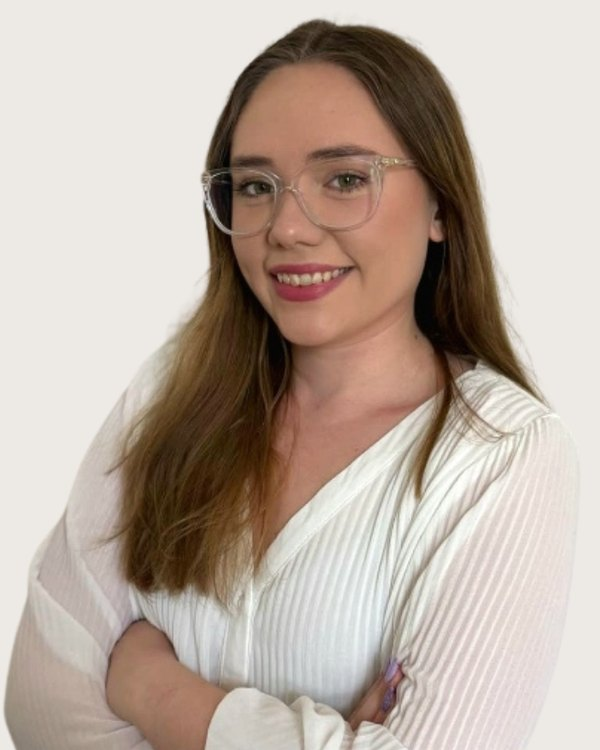

Szakpszichológus-jelölt
Kuszka
Adrienn
Pszichológus, addiktológiai tanácsadó szakpszichológus jelölt, sématerápiás konzultáns, integratív hipnoterapeuta, brainspotting szakember
Fogadó kolléga: Vajas Zsuzsanna, pszichológus asszisztens. +36 30 961 1364, hétköznap 9-15. Ő segít, ha nem biztos, hogy Kuszka Adrienn a megfelelő választás.
Örülök, hogy ide talált! Kuszka Adrienn vagyok, pszichológus, integratív hipnoterapeuta, mentálhigiénés szakember, coach, képzésben lévő pár és családterapeuta.
Hiszem és vallom, hogy mindenkinek megvan a maga segítője. Számomra minden egyes emberi történet különleges, és mélyen megtisztelő, hogy megismerhetem.
Pszichológusként a munkám leginkább a prevenció hitvallásán alapszik. Amikor Ön úgy érzi, hogy a belső egyensúlyt keresi, vissza szeretne találni Önmagához, jó helyen jár!
Szakmaiságomban ötvöződik a személyközpontú és holisztikus szemlélet, a pszichológia alaptételei és a spirituális hagyományok. Az általam tanult módszereket integrálva alkalmazom. A közös munka sikerét a segítő kapcsolat biztonságot nyújtó és elfogadó légköre adja. Célom, hogy a mindenkiben ott lévő megoldást felszínre segítsem, hogy a záródó ajtó újra nyílni tudjon.
Az élet több mint a természet véletlen egyszeri és megismételhetetlen játéka. S a benne lévő szeretet lehetősége végtelen.
Ha úgy érzi, segítségre van szüksége, keressen bátran!
Képzés és szakmai út
A képzések és a szupervízió az akkreditált szakképzőhely rendjében folynak. Mit jelent ez Önnek
Iskolai végzettség
Pszichológus ( MA, 2020), BBTE, (Tanácsadás és iskolapszichológia)
Mentálhigiénés segítő szakember (2010-2013) Károli Gáspár Református Egyetem, Pszichológiai Kar
Magyartanár (2003), UNE, Bölcsészettudományi Kar
Módszerspecifikus képzések
Szakmai tapasztalatok
9. kerületi Nevelési Tanácsadó (gyakorlat)
Egyéni folyamatok kísérése 2012-től
Egyesületi tagság
Magyar Családterápiás Egyesület
• Budapest, Benczúr u. 6. II/12
Magyar Pszichordáma Egyesület
• Budapest, Visegrádi u. 19. IV. em. 1
Integratív Pszichoterápiás Egyesület
• Budapest, Zsolt u. 8/a. fsz. 1.
Tanítómesterek
Akiknél a módszereket tanulta
- dr. Daubner Béla pszichiáter, kiképző pszichdoráma vezető, pszichoterapeuta, hipnoterapeuta, szupervízor
- dr. Vankó Tünde klinikai szakpszichológus, kiképző sématerapeuta
- dr. Tesseli Karolina orvos, kiképző pszichoterapeuta, hipnoterapeuta, szupervízor
- dr. Bíró Gyula NLPt oktató, klinikai szakpszichológus, hipnoterapeuta, pszichoterapeuta, szupervízor
- dr. Grezsa Ferenc pszichiáter
- dr. Lisznyai Sándor klinikai szakpszichológus
- Arnold Polivka Bécsben élő pszichológus, Hellinger családállítás oktató
- dr Varju Márta coach, kineziológus, mentálhigiénés szakember, írásanalitikus, jogász
- Horváth Tünde, MCC coach
- Munkámat szupervízió mellett végzem.
- Szupervízoraim:
- dr. Vankó Tünde klinikai szakpszichológus, sématerápiás kiképző
- Galgóczi Katalin klinikai szakpszichológua, sématerápiás kiképző
- dr. Barát Katalin pszichiáter, családterápiás kiképző
- dr. Moretti Magdolna pszichiáter, családterápiás kiképző
- dr Tessely Karolina integratív hipnoterapeuta, szupervízor
- dr Daubner Béla pszichiáter, pszichordáma kiképző
Rólam mondták
Kliensek visszajelzései, a hozzájárulásukkal
Adrienn számomra a higgadt erőt képviselte. Egyszerre volt gyöngéd, elfogadó, és finoman irányító. Ez biztonságot adott, ami nagyon segítette a közös munkánkat.
Megnyugtató, a találkozások során biztonságban éreztem magam, utána pedig felszabadultnak
Adri sosem ítélkezik, abszolút elfogadás van a részéről. Mindig ráérez, mikor mire van szükség. Rugalmas, elfogadó minden tekintetben, szeretem azt a bizalmi légkört, amit megteremt minden alkalommal. Érzem, hogy mindig figyel rám, és csak addig megyünk, ameddig nekem jó.
Számomra Adriennel a kezdetektől könnyű volt együtt dolgozni, hamar megtaláltuk a közös hangot. Nagyon jó szakembernek tartom, mert erőt sugároz, és támaszkodhatok rá, s emellett mégis folyamatosan arra ösztönöz, hogy egyedül tegyem meg a lépéseket. Nagy változásokat hoz az életemben a közös munka.
Ha inkább mást keresne
Három kolléga hasonló területekkel. A teljes regiszterben 37 szakember szűrhető.
Következő lépés
Időpont Kuszka Adriennnél
Írjon nekünk, vagy hívja ügyfélszolgálatunkat hétköznap 9 és 15 óra között. Az első alkalom 50 perc, díja 18-25 ezer forint alkalmanként. Ha Kuszka Adrienn naptára tele van, megmondjuk, ki tud hasonló területen fogadni.
